교통기사 (2019-09-21 기출문제)
1과목: 교통계획
1. 교통계획의 기능 및 역할로 옳지 않은 것은?
- 장기적인 교통계획의 목표를 설정해 준다.
- 교통정책의 목표를 제시한다.
- 투자의 우선순위를 설정해 준다.
- 즉흥적이고 신속한 교통계획을 집행할 수 있다.
(정답률: 80%)

2. 장ㆍ단기 교통계획의 차이점에 대한 설명으로 틀린 것은?
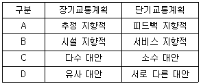
- A
- B
- C
- D
(정답률: 74%)
3. 준대중교통수단(para-transit)에 대한 설명으로 틀린 것은?
- 대중교통수단과 달리 이용자보다 공급자의 선택에 의해 서비스를 제공한다.
- 특정한 노선을 갖지 않고 이용자의 요구에 따라 운행된다.
- 배차간격이 일정하지 않을 수도 있다.
- 요금과 같이 일정한 규정을 만족시키는 모든 이용자는 항상 이용이 가능하다.
(정답률: 66%)
4. 내부수익률(IRR)에 대한 설명으로 옳은 것은?
- 할인율과 같다.
- 사업에 따른 기대수익률을 말한다.
- 인플레이션을 감안한 이자율이다.
- 할인율보다 높고 이자율보다는 낮다.
(정답률: 71%)
5. 개별행태모형에 대한 설명으로 틀린 것은?
- 형태를 반영하기 때문에 시간적으로 전이가 가능하다.
- 장기적ㆍ세부적인 교통정책 및 계획의 정확한 평가에 적합하다.
- 개별적ㆍ선택적ㆍ확률적 개념을 적용하여 분석한다.
- 교통존(교통지구)에 구애받지 않고 벗어난 지역 단위에도 적용이 가능하다.
(정답률: 48%)
6. 자동차에 사람이나 화물을 실은 채 철도로 운반하는 시스템은?
- Container 시스템
- car Ferry 시스템
- Piggyback 시스템
- Dual-mode Bus 시스템
(정답률: 75%)
7. 자가용의 과도한 이용을 억제하기 위한 가격정책(Pricing Policy)에서 경제학적 효율성의 원칙(pay as you go) 측면에서 가장 부적합한 대안은?
- 도심지 통행세
- 휘발유 특별 소비세
- 고속도로 통행료
- 자가용 구입에 따른 취득세
(정답률: 61%)
8. 버스와 지하철의 효용함수값이 각각 UB=-0.18, US=-1.15일 때, 로짓모형에 따른 각 수단별 선택 확률이 모두 옳은 것은?
- PB=0.55, PS=0.45
- PB=0.72, PS=0.28
- PB=0.86, PS=0.14
- PB=0.91, PS=0.09
(정답률: 67%)
9. 사람통행 실태조사 결과를 보완 및 검증하기 위하여 실시하는 조사는?
- 속도조사
- 스크린라인조사
- 시험차주행조사
- 터미널승객조사
(정답률: 80%)
10. 통행배정(Trip Assignment)모형 중 링크용량을 고려하는 것은?
- 로짓 모형
- 통행단 모형
- All-or-Nothing 법
- 확률적 평형배분법
(정답률: 47%)
11. 4단계 교통수요추정방법 중 수단 분담률은 경제적 특성에 의해 결정된다는 전제로부터 출발하는 것으로, 장래의 존별 통행 발생량을 산출한 후 통행분포(Trip distribution) 단계 전에 이용 가능한 교통 수단 분담률을 산정하여 수단 분담률을 도출하는 방법은?
- 통행단 모형(Trip-end model)
- 중력 모형(Gravity model)
- 카테고리 분석법(Category analysis)
- 통행 교차 모형(Trip exchange model)
(정답률: 60%)
12. 아래에서 가정기반통행(home-based trip)의 통행량은?
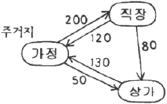
- 250 통행
- 320 통행
- 500 통행
- 580 통행
(정답률: 63%)
13. 토지이용과 도시교통의 관계에 대하여 교통체계는 토지이용현상, 교통공급시설, 교통현상으로 구성된다고 정의한 학자는?
- Perkin
- Rummer
- Black
- Tamazinis
(정답률: 58%)
14. 제한속도를 다시 결정하고자 진행하는 차량의 속도조사 시, 속도의 표준편차를 24km/h, 허용오차를 2km/h라 할 때 필요한 표본의 수는? (단, 신뢰도는 95%이다.)
- 384개
- 400개
- 484개
- 554개
(정답률: 60%)
15. 교통계획의 경제성 분석 방법인 편익ㆍ비용비 방법의 장점으로 거리가 먼 것은?
- 분석 결과를 이해하기 쉽다.
- 사업의 규모를 고려할 수 있다.
- 할인율을 모르더라도 사업의 수익성을 측정할 수 있다.
- 편익ㆍ비용이 발생하는 시간에 대한 고려가 가능하다.
(정답률: 66%)
16. 우리나라의 ‘국가 ITS 아키텍처’에서 정의하고 있는 ITS 7개 개발 분야(서비스 카테고리)가 아닌 것은?
- 교통관리 최적화 서비스
- 전자지불 처리 서비스
- 대중교통 서비스
- 저공해 차량 서비스
(정답률: 62%)
17. 보행자도로의 보행자 서비스 수준 F에 해당하는 보행자 점유 면적(m2/인) 기준은?
- 0.1 미만
- 0.38 미만
- 0.9 미만
- 3.3 이상
(정답률: 60%)
18. 의존통행자가 이용할 가능성이 가장 낮은 교통수단은?
- 기차
- 버스
- 택시
- 승용차
(정답률: 78%)
19. 폐쇄선 설정 시 고려할 사항으로 틀린 것은?
- 가급적 폐쇄선은 행정구역 경계선과 일치시킨다.
- 위성도시나 장래 도시화지역은 가급적 폐쇄선 내에 포함시키지 않는다.
- 폐쇄선을 횡단하는 도로나 철도 등은 최소화시킨다.
- 주변에 동이 위치하면 폐쇄선 내에 포함시킨다.
(정답률: 72%)
20. 도로건설에 따른 비용과 편익이 다음과 같을 때 이 도로건설 사업의 타당성 분석 결과로 옳은 것은? (단, 단위는 억원이며, 이자율은 10%이다.)
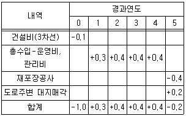
- NPV＞0이므로 적합한 사업이다.
- NPV＜이므로 부적합한 사업이다.
- 비용=편익이므로 부적합한 사업이다.
- 현재 상황으로는 알 수 없다.
(정답률: 70%)
2과목: 교통공학
21. 정주기 신호제어(Pre-times Control)에 대한 설명이 틀린 것은?
- 하루 중 신호시간 계획을 하나 또는 여러 개를 정한다.
- 차량검지기에 의하여 파악된 교통량에 대응하는 신호 시간을 신호주기마다 결정한다.
- 일정한 신호시간으로 운영되어 인접 신호등과의 연동이 편리하다.
- 사전에 준비된 현시 수 및 순서에 의해 신호제어 전략을 능동적으로 선택하여 적용한다.
(정답률: 59%)
22. 아래의 교통량-밀도-속도 모형에 대한 설명이 옳은 것은?
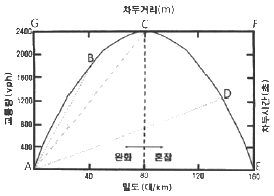
- 차두시간(초)의 최소점은 F점이다.
- 자유속도는 A점과 C점을 연결하는 기울기다.
- A점에서의 밀도는 교통신호에 의해 정지된 상태의 밀도를 나타낸다.
- 차두거리(m)의 최소점은 G점이다.
(정답률: 50%)
23. 신호시간 계획에 필요한 변수로 가장 거리가 먼 것은?
- 현시
- 옵셋(offset)
- 주기(cycle)
- 교차로 통과속도
(정답률: 64%)
24. 차량추종이론(car following theory)에 관한 설명으로 옳은 것은?
- 주로 도시 내의 단속류에 대한 분석이론이다.
- 차량 추종이 형성되는 형태로 FIFO, FILO, SIRP가 있다.
- 미시적 관점에서 두 차량 간에 대한 분석이지만, 이러한 개별적 움직임을 통해 교통류 전체의 형태를 추론할 수 있다.
- 교통류의 특성을 교통류율, 밀도, 속도로 설명하는 이론이다.
(정답률: 67%)
25. 속도분포에서 현재의 도로상태에서 대다수의 차량 운전자들이 주행하는 속도로, 안전속도로 간주하여 교통운영계획에 적용하는 %속도는?
- 15% 속도
- 50% 속도
- 85% 속도
- 100% 속도
(정답률: 76%)
26. 어느 신호교차로 한 차로군의 교통량은 1250vph, PHF는 0.80, fhu는 0.77, fw는 0.95일 때, 서비스수준 분석을 위하여 고려되는 첨두시간 교통류율은?
- 약 1000vph
- 약 1188vph
- 약 1563vph
- 약 1623vph
(정답률: 58%)
27. 시간평균속도
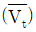
, 공간평균속도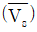
, 공간평균속도의 표준편차(σs)의 관계를 바르게 나타낸 것은?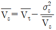
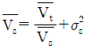
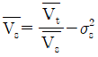
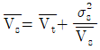
(정답률: 51%)
28. A차량이 일정 구간의 도로를 주행하는데 15분 소요되었고, 반대방향 주행 차량 중 A차량을 추월한 차량이 5대, A차량이 추월한 차량이 3대 일 때, 이 구간에서 A차량의 평균주행시간은? (단, A차량 주행방향의 교통량은 150대/시이다.)
- 12.8분
- 14.2분
- 16.6분
- 19.0분
(정답률: 47%)
29. 설계기준자동차로서 대형자동차의 길이 기준으로 옳은 것은?
- 16.7m
- 13.0m
- 9.0m
- 6.5m
(정답률: 56%)
30. 주차 발생 원단위법에 다른 주차 수요는? (단, 피크시 주차 발생량:5대/1000m2, 건물 연면적:15000m2, 주차이용 효율:75%)
- 47대
- 60대
- 96대
- 100대
(정답률: 59%)
31. 어떤 도로 구간의 교통량이 1200대/시, 평균 차량길이는 4m, 평균 차량속도는 60km/h일 때 평균 차간시간은?
- 2.64초
- 2.76초
- 2.90초
- 3.00초
(정답률: 41%)
32. 3현시로 운영되는 신호교차로에서 각 현시별로 고려하여야 하는 현시율이 각각 0.3, 0.15, 0.25일 때, Webster방식에 의한 최적신호주기는? (단, 현시당 손실시간은 3초다.)
- 55초
- 62초
- 71초
- 89초
(정답률: 53%)
33. 차량의 시공도로부터 알 수 없는 사항은?
- 신호 옵셋
- 차량 진행대의 폭
- 차량 진행대의 속도
- 차량 진행대의 차량구성
(정답률: 64%)
34. 노면과 타이어 상태에 따른 미끄럼 마찰계수가 가장 큰 상태는?
- 습윤-마모된 타이어
- 건조-양호한 타이어
- 건조-마모된 타이어
- 습윤-양호한 타이어
(정답률: 65%)
35. 접근지체(approach delay)를 구성하는 요소로 분류되지 않는 지체는?
- 정지지체(stopped delay)
- 가속지체(acceleration delay)
- 감속지체(deceleration delay)
- 대기행렬지체(queue delay)
(정답률: 60%)
36. 신호교차로의 이상적인 조건 기준이 틀린 것은?
- 100% 승용차로 구성된 교통류
- 차로 폭 3m 이상
- 접근로 정지선의 상류부 75m 이내에 노상 주차시설 없음
- 접근로 정지선의 상류부 50m 이내에 버스 정류장 없음
(정답률: 50%)
37. 신호교차로에 관한 용어의 설명이 틀린 것은?
- 임계차로군(critical lane group):주어진 신호현시 동안 가장 큰 포화도(V/C비)를 갖는 차로군
- 제어지체(control delay):신호제어로 인해 차로군이 속도를 줄이거나 정지함에 따른 지체
- 진행연장시간(end lag):황색신호가 켜지면 교차로 안이나 가까이에서 진행하던 차량은 정지선에 급정거 할 수 없으므로 황색신호의 일부분을 녹색신호처럼 불가피하게 이용하는 시간
- 양방 보호좌회전 신호(dual left turn protected):서로 마주보는 접근로의 좌회전이 동일 현시에 진행하는 신호
(정답률: 50%)
38. 다차로도로의 서비스수준 평가를 위한 효과척도로 옳은 것은?
- 최고제한속도
- 정지횟수
- 지체시간 비율
- 평균 통행속도
(정답률: 69%)
39. 교통류의 특성에서 평균 가속도에 관한 가속도의 표준편차를 무엇이라 하는가?
- 교통강도
- 충격편차
- 수락편차
- 가속소음
(정답률: 54%)
40. 교차로에서 한 개 또는 여러 개의 이동류의 도로 사용이 동시에 허용되는 시간을 의미하는 것은?
- 녹색시간
- 황색시간
- 손실시간
- 현시
(정답률: 58%)
3과목: 교통시설
41. 설계속도가 100km.h이고 편경사가 5%, 마찰계수가 0.3인 도로의 최소 곡선반경은?
- 약 225m
- 약 235m
- 약 245m
- 약 255m
(정답률: 56%)
42. 도시지역의 일반도로에 주정차대를 설치하는 경우에는 그 폭이 최소 얼마 이상이 되도록 하여야 하는가? (단, 소형자동차를 대상으로 하는 경우는 고려하지 않는다.)
- 1.5m 이상
- 2.0m 이상
- 2.5m 이상
- 3.0m 이상
(정답률: 54%)
43. 차도의 경사에 대한 설명이 틀린 것은?
- 도로노면의 횡단경사는 노면 위의 우수를 측구 등으로 배수시키기 위하여 필요하며, 그 횡단경사는 노면배수에 충분하고 자동차의 주행에 안전하고 지장이 없는 값이어야 한다.
- 도시지역 차도의 평면곡선부에 적용 가능한 최대 편경사는 8%이다.
- 연결로의 평면곡선부에 적용 가능한 최대 편경사는 8%이다.
- 차도의 평면곡선부에는 도로가 위치하는 지역, 적설 정도, 설계속도, 평면 곡선 반지름 및 지역 상황에 따라 적용 가능한 비율 이하의 최대 편경사를 두어야 한다.
(정답률: 46%)
44. 곡선반경이 300m, 설계속도가 50km/h인 도로에서 동일축의 내ㆍ외측 타이어의 압력이 같아지는 편경사는?
- 0.⑤6
- 0.066
- 0.076
- 0.086
(정답률: 57%)
45. 교통안전표지의 설치방법 중 도로의 측단, 보도 또는 중앙분리대 등에 설치된 지주를 타도 부분까지 높게 달아내어 표지판을 달아낸 끝부분에 설치하는 방법은?
- 단주식
- 내민식
- 문형식
- 부착식
(정답률: 41%)
46. 시선유도시설에 대한 설명으로 옳지 않은 것은?
- 반사체가 최적의 효과를 발휘할 수 있도록 설치한다.
- 시선유도시설은 도로 끝 및 도로 선형을 명시하여 주간 및 야간에 운전자의 시선을 유도하기 위하여 설치한다.
- 표지병은 야간 및 악천후 시 운전자의 시선을 명확히 유도하기 위하여 도로 표면에 설치하는 시설물이다.
- 시선유도표지는 급한 평면곡선부 등 시거가 불량한 장소에서 도로의 선형 및 굴곡 정도를 갈매기 기호체를 사용하여 운전자가 명확히 알 수 있도록 하는 시설물이다.
(정답률: 47%)
47. 고속도로 비상주차대의 표준 설치간격은?
- 500m
- 750m
- 1000m
- 1250m
(정답률: 64%)
48. 평면교차로의 상충 유형이 모두 옳은 것은?
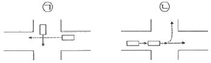
- ㉠ 교차상충, ㉡ 엇갈림상충
- ㉠ 교차상충, ㉡ 분류상충
- ㉠ 합류상충, ㉡ 엇갈림상충
- ㉠ 합류상충, ㉡ 분류상충
(정답률: 65%)
49. 비신호 평면 교차로에서 좌회전 차로의 대기차량을 위한 길이 산정 기준은?
- 첨두시간 평균 2분간 도착하는 좌회전 교통량
- 첨두시간 평균 5분간 도착하는 좌회전 교통량
- 첨두시 신호 1주기 당 도착하는 좌회전 차량 수
- 첨두시 신호 2주기 당 도착하는 좌회전 차량 수
(정답률: 49%)
50. 각 도로의 접근성과 이동성의 관계를 나타낸 아래 그림에서 각 구간 (㉠~㉣)에 해당하는 기능별 도로의 종류가 모두 옳은 것은?
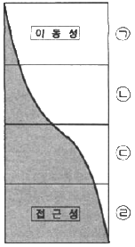
- ㉠ 고속도로, ㉡ 국지도로, ㉢ 간선도로, ㉣ 집산도로
- ㉠ 고속도로, ㉡ 간선도로, ㉢ 집산도로, ㉣ 국지도로
- ㉠ 국지도로, ㉡ 집산도로, ㉢ 고속도로, ㉣ 간선도로
- ㉠ 국지도로, ㉡ 집산도로, ㉢ 간선도로, ㉣ 고속도로
(정답률: 69%)
51. 도로의 구조ㆍ시설 기준에 관한 규칙상 설계속도가 120km/h이고 도로의 교각이 5° 이상인 경우 평면곡선의 최소 길이는?
- 60m
- 100m
- 120m
- 140m
(정답률: 34%)
52. 다음 중 기본 차로수가 균형 상태이면서 차로수 균형의 원칙을 지키고 있는 설계는?
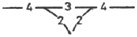
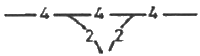
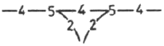
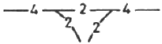
(정답률: 50%)
53. 평면선형과 종단선형을 조합하여 설계할 때 유의사항으로 거리가 먼 것은?
- 도로환경과의 조화를 고려할 것
- 선형이 시각적 연속성을 확보할 것
- 노면 배수가 적절히 되는 경사를 고려할 것
- 같은 방향으로 굴곡하는 두 곡선 사이에 짧은 직선을 삽입할 것
(정답률: 69%)
54. +6% 경사와 -3% 경사를 갖는 도로부 사이를 450m의 종단곡선으로 연결하였다. 이 종단 곡선의 시작부 표고가 600.00m라면 곡선의 시작부에서 50m 떨어진 지점의 표고는?
- 602.75m
- 534.85m
- 4⑤.71m
- 3⑤.42m
(정답률: 28%)
55. 차로폭은 작아도 되나 차로 진행방향으로 긴 주차폭이 필요하며, 1대당 주차 소요면적이 최대인 주차형식은?
- 90° 후진주차
- 60° 전진주차
- 45° 교차주차
- 30° 전진주차
(정답률: 64%)
56. 도로의 구분에 따른 설계기준자동차가 아닌 것은?
- 이륜차
- 대형자동차
- 승용자동차
- 세미트레일러
(정답률: 68%)
57. 도로의 구조ㆍ시설 기준에 관한 규칙상 보도의 유효폭은 보행자의 통행량과 주변 토지 이용 상황을 고려하여 결정하되 최소 몇 미터 이상으로 하여야 하는가? (단, 지방지역의 도로와 도시지역의 국지도로에서 지형상 불가능하거나 기존 도로의 증설ㆍ개설 시 불가피하다고 인정되는 경우는 고려하지 않는다.)
- 1.5m
- 2.0m
- 3.0m
- 4.0m
(정답률: 60%)
58. 도로의 안전시설 및 부대시설에 대한 설명으로 옳지 않은 것은?
- 지하차도에서 오른쪽 길어깨의 폭을 2.5미만으로 하는 경우 비상주차대를 설치하여야 한다.
- 긴급제동시설의 형식은 부설 재료에 따라 모래더미 형식과 골재부설 형식으로 크게 구분할 수 있다.
- 규모에 따른 휴게시설의 종류는 일반휴게소, 화물차휴게소, 쉼터휴게소, 간이휴게소가 있다.
- 버스정류소는 버스승객의 승ㆍ하차를 위하여 본선의 외측차로를 그대로 이용할 경우 그 공간을 의미한다.
(정답률: 44%)
59. 도시지역 고속도로에서 중앙분리대의 최소 폭 기준은?
- 1.0m
- 1.5m
- 2.0m
- 3.0m
(정답률: 45%)
60. 도로 및 교통 조건이 아래와 같은 지방지역 고속도로의 교통량 대 용량비(VP/C)는?
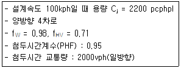
- 0.57
- 0.69
- 0.74
- 0.85
(정답률: 39%)
4과목: 도시계획개론
61. 중세 유럽의 도시에서 나타나는 공통적인 물리적 특성과 거리가 먼 것은?
- 모든 동선이 중앙의 시장이나 교회 광장에 집중하도록 구성되었다.
- 성벽과 대규모 사원이 도시공간의 주된 구성요소이다.
- 밀집된 형태의 중정을 지닌 주택군이 구성되고, 이들은 컬데삭으로 연결되었다.
- 방어를 위해 사용된 해자, 운하, 강이 개별도시를 고립시켰다.
(정답률: 54%)
62. 도시ㆍ군기본계획의 목표연도는 계획수립시점으로부터 얼마를 기준으로 하는가?
- 5년
- 10년
- 20년
- 30년
(정답률: 39%)
63. 도시계획에 있어서 주민참여의 역할로 거리가 먼 것은?
- 자원배분의 경제성을 극대화할 수 있다.
- 주민의 자발성에 의하여 사업에 대한 발전성과 지속성 유지가 용이해진다.
- 효율성 있는 사업 추진을 가능하게 한다.
- 계획에 관련된 사람들에게 정보를 제공하여 사안이나 대안에 대한 이해를 도와준다.
(정답률: 52%)
64. 도시발전과 토지이용 패턴에 관한 도시공간 구조를 설명하는 동심원 이론을 처음으로 주장한 사람은?
- H.Hoyt
- C.D.Harris
- E.L.Ullman
- E.W.Burgess
(정답률: 50%)
65. 투입산출계수(lnput-Output Coefficient, aij)에 대한 설명으로 옳은 것은?
- ⅰ산업이 한 단위의 생산을 증가시킬 때, j 산업에 미치는 직간접 파급효과
- j 산업이 한 단위의 생산을 증가시킬 때, ⅰ산업에 미치는 직간접 파급효과
- ⅰ산업이 한 단위의 제품을 생산하기 위하여 투입해야 하는 j 산업의 투입 재화와 용역
- j 산업이 한 단위의 제품을 생산하기 위하여 투입해야 하는 ⅰ산업의 투입 재화와 용역
(정답률: 44%)
66. 도시 및 주거환경정비법에 따른 정비사업 중 ‘재개발사업’의 정의에 해당하는 것은?
- 도시저소득 주민이 집단거주하는 지역으로서 정비기반시설의 극히 열악하고 노후ㆍ불량건축물이 과도하게 밀집한 지역의 주거환경을 개선하기 위한 사업
- 정비기반시설이 열악하고 노후ㆍ불량 건축물이 밀집한 지역에서 주거환경을 개선하거나 상업지역ㆍ공업지역 등에서 도시기능의 회복 및 상권활성화 등을 위하여 도시환경을 개선하기 위한 사업
- 정비기반시설은 양호하나 노후ㆍ불량 건축물에 해당하는 공동주택이 밀집한 지역에서 주거환경을 개선하기 위한 사업
- 단독주택 및 다세대주택이 밀집한 지역에서 정비기반시설과 공동이용시설 확충을 통하여 주거환경을 보전ㆍ정비ㆍ개량하기 위한 사업
(정답률: 51%)
67. 근린주구를 물리적 계획의 기본단위로 하여 주구 내의 생활안정을 유지하고 편리성과 쾌적성을 확보하기 위한 6가지 계획원리를 제시한 사람은?
- 하워드(E. Howard)
- 페리(C.A Perry)
- 르꼬르뷔제(Le Corbusier)
- 랑팡(P.C.L 'Enfant)
(정답률: 56%)
68. 건폐율에 대한 설명으로 틀린 것은?
- 대지면적에 대한 건축면적의 비율을 의미한다.
- 거주환경의 쾌적성과 안전성 등의 확보를 위한 오지의 조성이 목적이다.
- 건폐율 적용의 최대한도는 국토의 계획 및 이용에 관한 법률에서 정한 기준에 따른다.
- 대지에 둘 이상의 건축물이 있는 경우에는 이들 중 큰 규모의 건축물의 건축면적을 적용한다.
(정답률: 57%)
69. 보차분리기법을 평면분리방식, 입체분리방식, 시간분리방식으로 구분할 때, 다음 중 평면분리방식에 해당하지 않는 것은?
- 보도
- 아케이드
- 보행자전용도로
- 보행자 데크
(정답률: 43%)
70. 인간정주사회의 구성요소를 인간, 사회, 자연, 네트워크, 구조물의 5가지로 제시하고 인간정주공간을 15개 단위로 구분하여 설명한 학자는?
- 로버트 오웬
- 제임스실크 버킹검
- 아디케스
- 독시아디스
(정답률: 46%)
71. 도시공원의 유형을 생활권공원과 주제공원으로 구분할 때, 다음 주제공원에 해당하지 않는 것은?
- 문화공원
- 수변공원
- 체육공원
- 어린이공원
(정답률: 45%)
72. 다음 중 인구성장이 초기에는 완만하다가 일정 기간이 지나면 급속한 증가율을 나타내고, 또 일정 기간이 지나면 그 증가율이 점차 감소하여 인구가 일정 수준을 유지하는 포화 상태에 이른다는 이론에 기초한 인구 예측 방법은?
- 최소자승법
- 로지스틱곡성법
- 등기급수법
- 집단생잔법
(정답률: 52%)
73. 국토기본법에 따른 지역계획에 해당하는 것은? (단, 다른 법률에 따라 수립하는 지역계획은 고려하지 않는다.)
- 특정지역개발계획
- 수도권발전계획
- 개발촉진지구개발계획
- 광역권개발계획
(정답률: 31%)
74. 도시계획 관련 조사 자료에 대한 접근이 직접적이냐 간접적이냐에 따라 1차 자료와 2차 자료로 나눌 때, 1차 자료의 조사 방법이 아닌 것은?
- 현지조사
- 면접조사
- 설문조사
- 문헌조사
(정답률: 54%)
75. 도로의 사용 및 형태별 구분에 따른 설명으로 옳지 않은 것은?(오류 신고가 접수된 문제입니다. 반드시 정답과 해설을 확인하시기 바랍니다.)
- 보행자전용도로:폭 1.5미터 이상의 도로로서 보행자의 안전하고 편리한 통행을 위하여 설치하는 도로
- 보행자우선도로:폭 10미터 미만의 도로로서 보행자와 차량이 혼합하여 이용하되 보행자의 안전과 편의를 우선적으로 고려하여 설치하는 도로
- 자전거전용도로:하나의 차로를 기준으로 폭 1.0미터 이상의 도로로서 자전거의 통행을 위하여 설치하는 도로
- 일반도로:폭 4미터 이상의 도로로서 통상의 교통소통을 위하여 설치하는 도로
(정답률: 40%)
76. 도시ㆍ군계획시설의 결정ㆍ구조 및 설치기준에 관한 규칙에 따른 도로의 일반적 결정기준에서 주간선도로와 주간선도로의 배치간격 기준은?
- 100m 내외
- 250m 내외
- 500m 내외
- 1000m 내외
(정답률: 60%)
77. 지구단위계획구역의 지정목적을 이루기 위하여 지구단위계획에 반드시 포함되어야 하는 사항이 아닌 것은? (단, 기존의 용도지구를 폐지하고 그 용도지구에서의 건축물이나 그 밖의 시설의 용도ㆍ종류 및 규모 등의 제한을 대체하는 지구단위계획의 경우는 고려하지 않는다.)
- 건축물 높이의 최고한도 또는 최저한도
- 환경관리시설의 형태, 색채 및 규모
- 건축물의 용도제한
- 대통령령으로 정하는 기반시설의 배치와 규모
(정답률: 46%)
78. 국토의 계획 및 이용에 관한 법령상 정의하는 기반시설에 해당하지 않는 것은?
- 공간시설
- 보건위생시설
- 환경경관시설
- 공공ㆍ문화체육시설
(정답률: 43%)
79. 도시화에 관한 내용과 가장 거리가 먼 것은?
- 도시로의 인구 집중
- 도시지역의 외연적 확대
- 소비성, 서비스성 산업의 경제 요소 감소
- 농업사회에서 비농업사회로의 인구 이동
(정답률: 60%)
80. 선형도시(Linear city)에 관한 설명 중 옳지 않은 것은?
- 도심의 형성이 유리하여 대도시에 적합하다.
- 교통시간을 단축하여 도시의 교통문제를 해결하는 목적을 갖고 있다.
- 도시의 다이내믹한 개발과 기능적인 성장을 도모하기 위해 제안되었다.
- 1882년 스페인의 마타(Soria Y. Mata)가 제안하였다.
(정답률: 34%)
5과목: 교통관계법규
81. 도시교통정비촉진법의 목적과 가장 거리가 먼 것은?
- 교통시설의 정비 촉진
- 도시교통의 원활한 소통과 교통편의 증진
- 교통수단과 교통체계의 효율적인 운영ㆍ관리
- 교통사고 예방으로 국민의 생명과 재산 보호
(정답률: 54%)
82. 도로법상 고속국도와 일반국도의 관리청은?
- 국토교통부장관
- 행정안전부장관
- 한국도로공사장
- 관할 지역 경찰청장
(정답률: 58%)
83. 국가통합교통체계효율화법상 증기 교통시설 투자계획에 대한 설명이 틀린 것은?
- 국토교통부장관은 5년 단위로 증기 교통시설 투자계획을 수립한다.
- 계획에 포함된 지방교통시설 개발사업을 지방자치단체가 시행하는 경우 국가의 지원을 받을 수 없다.
- 증기 교통시설투자계획에는 교통시설 간의 적정한 수송 분담구조 및 투자재원 배분의 설정에 관한 사항이 포함되어야 한다.
- 국토교통부장관은 소관별 집행 실적 평가보고서를 종합 분석하여 공공기관의 장에게 통보하여야 한다.
(정답률: 53%)
84. 교통안전법상 국가교통부안전기본계획에 포함되어야 할 사항으로 가장 거리가 먼 것은?
- 교통안전지식의 보급 및 교통문화 향상 목표
- 교통안전 전문 인력의 양성
- 교통안전담당자 지정에 관한 사항
- 교통수단ㆍ교통시설별 교통사고 감소목표
(정답률: 54%)
85. 국가통합교통체계효율화법상 지능형교통체계 기본계획에 대한 설명이 틀린 것은?
- 국가차원의 지능형교통체계기본계획은 10년 단위로 수립하여야 한다.
- 지능형교통체계 여건 변화를 고려하여 2년마다 전반적으로 재검토하고 필요한 경우 그 내용을 정비한다.
- 시ㆍ도지사 또는 시장ㆍ군수는 해당 지역의 지능형교통체계에 관한 기본계획을 수립할 수 있다.
- 자동차ㆍ도로교통분야, 철도교통분야, 해상교통분야(항만 포함), 항공교통분야(항공 포함)에 대하여 분야별 계획을 수립하여야 한다.
(정답률: 39%)
86. 도로교통법상 ‘차’에 해당하지 않는 것은?
- 자전거
- 건설기계
- 의료용 스쿠터
- 원동기장치자전거
(정답률: 48%)
87. 도로교통법규에 따른 자동차 등의 운행속도에 관한 기준이 옳은 것은?
- 편도 2차로 이상의 일반도로에서는 매시 80km 이내로 운행하여야 한다.
- 일반도로에서는 매시 50km 이내로 운행하여야 한다.
- 자동차전용도로는 매시 80km의 최고속도만 규정하고 있다.
- 자동차 등의 도로 통행 속도는 국토교통부령으로 정한다.
(정답률: 37%)
88. 도로교통법상 차마의 운전자가 도로의 중앙이나 좌측 부분을 통행할 수 있는 경우가 아닌 것은?
- 도로가 일방통행인 경우
- 도로의 파손으로 도로의 우측부분을 통행할 수 없는 경우
- 운전자가 적절히 판단해서 통행하는 경우
- 도로 우측 부분의 폭이 6m가 되지 아니하는 도로에서 다른 차를 앞지르는 경우
(정답률: 58%)
89. 복합환승센터 지정의 해제에 관란 아래 설명에서 밑줄 친 내용에 해당하는 것은?
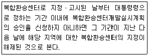
- 4년 이내
- 3년 이내
- 2년 이내
- 1년 이내
(정답률: 44%)
90. 국가통합교통체계효율화법규상 타당성 평가 결과와 예비타당성조사 결과의 비교에서 현저한 차이가 발생한 경우로 인정하는 기준이 옳은 것은?
- 교통 수료 예측 결과 해당 타당성 평가 실시 결과가 예비타당성조사 실시 결과보다 100분의 30 이상 증감한 경우
- 편익 분석 결과 해당 타당성 평가 실시 결과가 예비타당성조사 실시 결과보다 100분의 20이상 증감한 경우
- 비용 분석 결과 해당 타당성 평가 실시 결과가 예비타당성 조사 실시 결과보다 100분의 20 이상 증감한 경우
- 편익ㆍ비용비 분석 경과 해당 타당성 평가 실시 결과가 예비타당성조사 실시 결과보다 100분의 20 이상 증감한 경우
(정답률: 43%)
91. 국가통합교통체계효율화법에 따른 “국가기간 교통시설”에 해당하지 않는 것은?
- 「공항시설법」에 따른 공항
- 「항만법」에 따른 무역항
- 「철도의 건설 및 철도시설 유지관리에 관한 법률」에 따른 광역철도
- 「국가통합교통체계효율화법」에 따른 광역복합환승센터
(정답률: 48%)
92. 국가교통안전기본계획은 몇 년 단위로 수립하여야 하는가?
- 5년
- 7년
- 10년
- 20년
(정답률: 42%)
93. 문화 및 집회시설(관람장 제외)은 시설 면적 몇 m2당 1대를 기준으로 부설주차당을 설치하는가?
- 50m2
- 100m2
- 150m2
- 200m2
(정답률: 53%)
94. 주차장법규에 따른 노상주차장의 구조ㆍ설비 기준이 틀린 것은?
- 너비 6m 미만의 도로에 설치하여서는 아니된다.
- 주차대수 규모가 20대 이상 50대 미만인 경우 장애인전용주차구획을 1면 이상 설치하여야 한다.
- 고속도로ㆍ자동차전용도로 또는 고가도로에 설치하여서는 아니된다.
- 종단경사도가 6%를 초과하는 도로로 보도와 차도가 구별되어 있고 그 차도의 너비가 13m 이상인 도로에는 설치할 수 있다.
(정답률: 57%)
95. 도시교통정비지역으로 지정된 행정구역을 관할하는 시장이나 군수는 몇 년 단위의 도시 교통 정비 기본계획을 수립하여야 하는가?
- 5년
- 10년
- 20년
- 30년
(정답률: 23%)
96. 도시교통정비지역으로 지정ㆍ고시하는 기준은?
- 주차장면수
- 자동차등록대수
- 행정구역
- 인구
(정답률: 38%)
97. 도로교통법규상 신호등 등화의 배열순서로 옳은 것은? (단, 적색ㆍ황색ㆍ녹색화살표ㆍ녹색의 사색등화로 표시되는 신호등의 경우다.)
- 좌로부터 녹색, 녹색화살표, 황색, 적색의 순서이다.
- 위로부터 적색, 황색, 녹색, 녹색화살표의 순서이다.
- 위로부터 적색, 황색, 녹색화살표, 녹색의 순서이다.
- 좌로부터 녹색화살표, 녹색, 활색, 적색의 순서이다.
(정답률: 52%)
98. 도로교통법상 정차 및 주차 금지 장소 기준이 틀린 것은?
- 교차로의 가장자리나 도로의 모퉁이로부터 5m 이내인 곳
- 건널목의 가장자리로부터 10m 이내인 곳
- 횡단보도로부터 10m 이내인 곳
- 안전지대의 사방으로부터 20m 이내인 곳
(정답률: 52%)
99. 도로법상 도로관리청은 소관 도로에 대한 도로건설ㆍ관리계획을 몇 년 마다 수립하여야 하는가?
- 5년
- 10년
- 15년
- 20년
(정답률: 43%)
100. 시ㆍ도지사 또는 시장ㆍ군수ㆍ구청장이 도로관리청인 도로 중 대도시권의 주요 간선도로로서 교통혼잡의 해소, 물류의 원활한 흐름을 위하여 개선사업의 시행이 필요한 구간의 도로를 무엇이라 하며, 이 구간 도로에 대하여 권역별 개선사업계획을 수립하여야 하는 기간 기준이 모두 옳게 짝지어진 것은?
- 권역별 교통혼잡도로, 3년
- 대도시권 교통혼잡도로, 5년
- 대도시권 교통혼잡도로, 3년
- 권역별 교통혼잡도로, 5년
(정답률: 55%)
6과목: 교통안전
101. 교차로에서 시거불량에 의한 교통사고의 방지대책으로 옳지 않은 것은?
- 장애물 제거
- 차로 폭 확장
- 예고표지의 설치
- 일단정지표지 설치
(정답률: 70%)
102. 도시ㆍ군계획시설사업으로 시행하는 다음의 도로 건설 사업 중 개시 전 단계의 도로 안전 진단을 실시할 수 있는 대상사업이 아닌 것은?
- 총 길이 1km 이상의 국도
- 총 길이 3km 이상의 지방도
- 총 길이 5km 이상의 고속국도
- 총 길이 5km 이상의 국가지원지방도
(정답률: 40%)
103. 차량방호 안전시설 중 하나인 방호울타리의 종별에 해당하지 않는 것은?
- 교량용
- 노측용
- 터널용
- 분리대용
(정답률: 48%)
104. 교통사고 조사 목적 중에서 그 지향하는 바가 가장 단편적인 것은?
- 사고 감소
- 과실자의 판단
- 사고원인 규명
- 사고특성 규명
(정답률: 51%)
1⑤. 어느 사고다발지점에 대한 개선안 A, B, C, D를 수립하여 각 대안의 비용(PVC)과 편익(PVB)을 조사한 결과가 아래와 같을 때 가장 경제성이 좋은 개선안은? (단, Incremental NPV 방법에 의한다.)
- A
- B
- C
- D
(정답률: 51%)
106. 교통사고 조사 시 교통사고 현장의 도로상에서 조사하는 사항이 아닌 것은?
- 노상 산란물
- 스키드마크(Skidmark)
- 차량 및 인체의 최종 정지 위치
- 직접 접촉 파손(Contact damage)
(정답률: 51%)
107. 교차로에서의 사고방지를 위해 신호등을 설치하려고 할 때 그 타당성과 가장 거리가 먼 것은?
- 사고 경험
- 설치 용이성
- 최소 차량 교통량
- 최소 보행자 교통량
(정답률: 50%)
108. 도로를 주행하다 급정거한 차량의 스키드마크를 조사한 결과, 15m가 나타난 다음 2m를 지나서 다시 5m가 나타났다. 이 차량의 제동 전 초기속도는? (단, 타이어-노면 마찰계수는 0.7이며, 평탄구간이다.)
- 57.63km/h
- 58.63km/h
- 59.63km/h
- 60.63km/h
(정답률: 52%)
109. 교통사고가 다발하는 단로부(mid-block)에서 보행자 횡단에 의한 사고를 개선하기 위한 대책으로 가장 거리가 먼 것은?
- 차로폭의 재조정
- 입체횡단시설 설치
- 횡단보도 예고표지 신설
- 마찰계수가 높은 노면포장
(정답률: 53%)
110. 3번 국도의 어느 10km 구간에서 작년 한 해 동안의 교통사고 발생건수가 56건이었으며, 이 고간의 ADT는 8000대이었다. 이 도로구간의 백만차량-km당 평균사고율은?
- 19.2건
- 0.6건
- 1.92건
- 700건
(정답률: 46%)
111. 다음 중 자동차의 정지거리를 올바르게 표시한 것은?
- 공주거리-제동거리
- 공주거리+제동거리
- (공주거리-제동거리)×2
- (공주거리+제동거리)×2
(정답률: 65%)
112. 교통사고 상황을 나타내는 다음 기호가 나타내는 사고 유형은?
- 추돌사고
- 보행사고
- 정면 충돌사고
- 추월 접촉사고
(정답률: 68%)
113. 다음 중 도로교통을 구성하는 3요소가 아닌 것은?
- 도로
- 사람
- 자본
- 자동차
(정답률: 72%)
114. 주거지역에서 차량의 높은 속도는 주거환경을 해치고 어린이 및 보행자 교통사고를 유발하는 위험 요소다, 이들 지역의 차량속도를 적정 수준으로 유지하기 위해 노면에 돌출부를 설치한 것을 무엇이라 하는가?
- 속도험프
- 충격쿠션
- 슬립베이스
- 브레이크 웨이
(정답률: 66%)
115. 교통사고 조사에서 최초접촉지점을 판정할 때에 필요한 사항으로 거리가 먼 것은?
- 스패터의 위치
- 패인 자국의 위치
- 차체의 파손 위치
- 스키드마크가 변형된 위치
(정답률: 47%)
116. 관성에 의하여 속도 50km/h로 주행하는 2톤의 차량이 0.5톤의 모래통을 충격한 후의 속도는?
- 30km/h
- 35km/h
- 40km/h
- 45km/h
(정답률: 34%)
117. 어느 차량이 급정지하면서 노면에 생긴 직선미끄럼 흔적의 길이가 각각 다음과 같을 때, 이 차량의 미끄럼거리로 사용되는 것은?
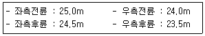
- 23.5m
- 24.0m
- 24.25m
- 25.0m
(정답률: 58%)
118. 도로교통사고의 일반적 특성에 대한 설명으로 옳지 않은 것은?
- 자주 발생하지 않는 희박한 사건(rare event)으로 볼 수 있다.
- 언제 발생할지 예측하기 어려운 시간적 임의성(time random event)을 지닌다.
- 어디서 발생할지 예측하기 어려운 공간적 임의성(space random event)을 지닌다.
- 주기적(cyclic)으로 발생하기 때문에 사고 유형별 발생 주기의 정확한 예측이 가능하다.
(정답률: 72%)
119. 인간이 운전할 때 필요한 감각정보의 약 80%를 차지하고 있는 감각은?
- 시각
- 청각
- 촉각
- 후각
(정답률: 71%)
120. 다음 중 차량 10000대당 사망률을 바르게 표현한 것은? (단, R:10000대당 사망률, B:연총사망자수, M:차량등록대수)
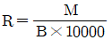
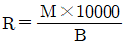
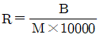
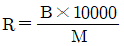
(정답률: 49%)